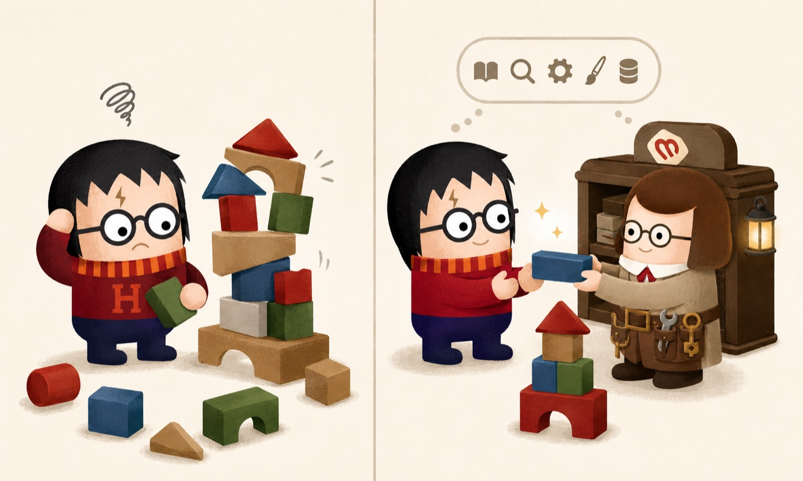
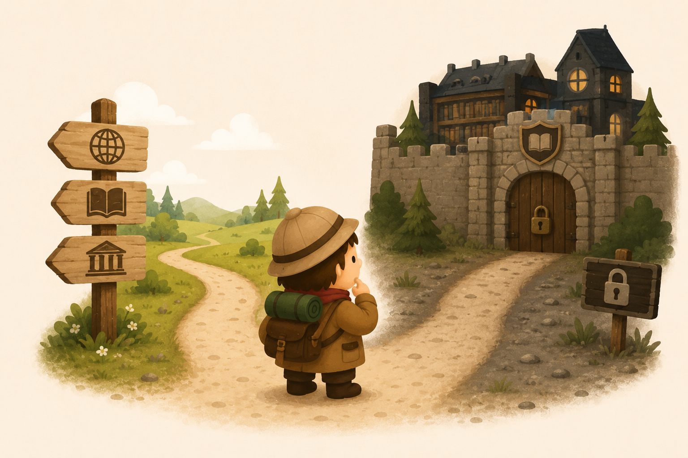
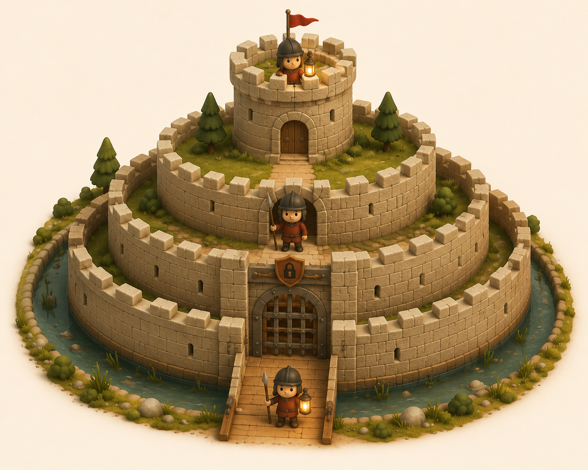

Bez MCP
-
−
Vymyslené CSS triedy
-
−
Nesprávna štruktúra
-
−
Každý dostane iné tlačidlo
Ako dať AI oči a ruky — a ako sme ju naučili náš styleguide.

Harry vie kúzliť. Hermiona vie, v ktorej knihe je odpoveď.
Náš styleguide nikdy nevidel — generuje presvedčivý HTML z tisícov iných webov. A platí to pre každý AI nástroj, nie len Claude.
Open-source štandard od Anthropic (november 2024). Definuje, ako môže AI volať externé funkcie a získavať dáta — bez ohľadu na to, od koho model je.
Tri najčastejšie omyly — vrátane tých z nášho tímového prieskumu.
Tools, resources, prompts. My zatiaľ používame len prvé.
Mapa = prompts · kniha = resources · náradie = tools
Funkcie, ktoré AI volá s parametrami. Server ich vykoná a vráti výsledok.
get_component("buttons")
Dáta, ktoré server vystavuje na čítanie — súbory, logy. AI ich číta podľa URI.
file:///app/main.scss
Pripravené prompt šablóny s parametrami — klient ich ponúka ako rýchle akcie.
"Vytvor formulár pre {{x}}"
AI nečíta kód — číta popisy toolov.
get_componentdo_thingnull bez vysvetleniaNie každý kontextový problém potrebuje vlastný server.
Heuristika: ak sa odpoveď dá vygúglovať, MCP netreba. Ak je za firewallom alebo sa mení každú hodinu — MCP áno. A MCP s API nesúperí — tool ich zvyčajne len obaľuje pre AI.

MCP server nie je len pomocník — môže byť aj vstupná brána pre útok.

Každý tool rieši jednu konkrétnu otázku AI o našom dizajn systéme.
HTML tagy pre assety.
Kompletný HTML dokument.
HTML fragment komponentu.
Zoznam komponentov.
Detail s param schémou.
~186 Font Awesome ikoniek.
Snippet pre ikonku.
Utility triedy referencia.
Rovnaký codebase — len iný zdroj dát.
Server fetchuje aktuálne dáta z mrtns.sk/assets, drží ich v cache 5 minút. Vždy konzistentné s produkciou.
Aktivuje sa env premennou. Server číta YAML súbory priamo — zmeny vidno okamžite bez deploya. Navyše pridáva 3 interné tooly na čítanie SCSS a dát z repa.
Tri kroky — a tvoj AI klient vidí celý styleguide.
Lokálne jediným príkazom ./mcp.sh v Dockeri — alebo rovno použi tímový endpoint mcp.mrtns.sk.
~10 riadkov do configu AI klienta. Hotový snippet nájdeš v docs/guides/mcp-server.md.
AI vidí komponenty, ikony aj utility — generuje rovno z nášho styleguide.
Styleguide je len začiatok. Pár nápadov, ktoré zazneli priamo od vás v prieskume.
AI s prehľadom nad backlogom — sumáre, prioritizácia, hľadanie duplicitných ticketov.
Feedbacky a NPS cez MCP tool — trendy a témy bez ručného čítania stoviek odpovedí.
Ktorý interný systém by mal tvoj AI asistent vidieť ako ďalší? Poďme sa o tom pobaviť.
Open-source protokol od Anthropicu (nov 2024). Funguje s každým AI — ako USB-C s každým zariadením.
Tools, resources, prompts. My zatiaľ používame len tools — funkcie, ktoré AI volá.
Setup, starter template, komponenty, ikonky, utility — pokrývajú typické otázky AI pri vývoji.
External fetch z mrtns.sk pre produkciu, internal čítanie zo súborov pre lokálny vývoj.
YAML → JSON → CDN. Update styleguide = update pre AI naraz, bez duplicity.
Bonus. Tieto slides sú postavené priamo na Martinus styleguide bundli. Dogfooding. 🍷
Detailný materiál — vrátane sequence diagramov, časovej osi a histórie protokolu — nájdeš v dlhšej verzii článku.